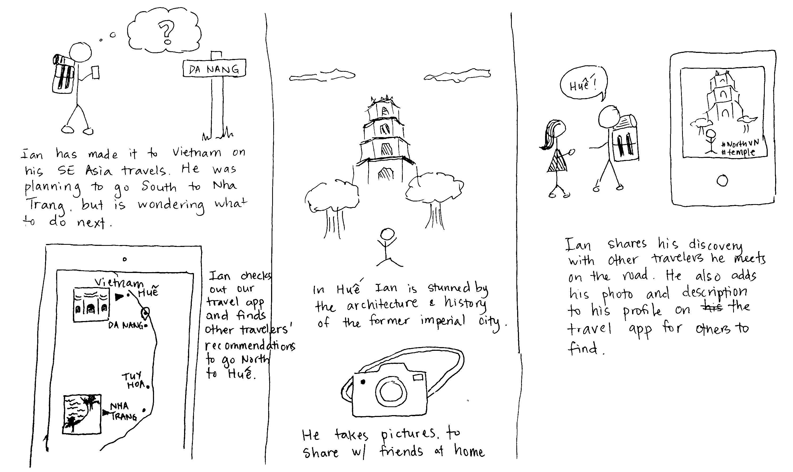
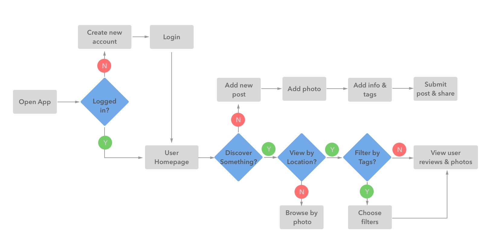
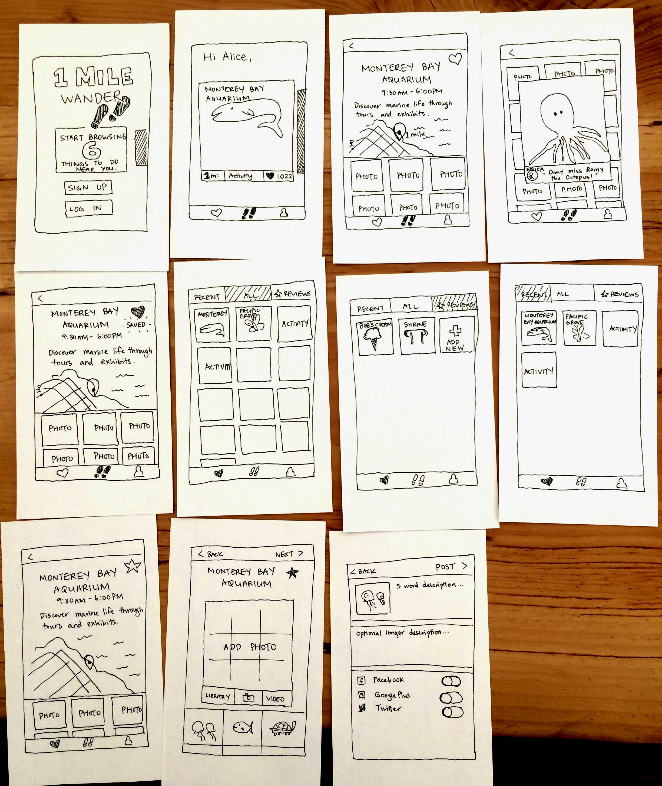
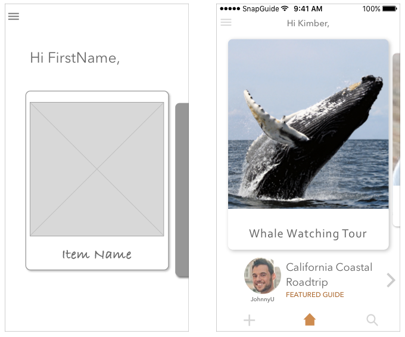
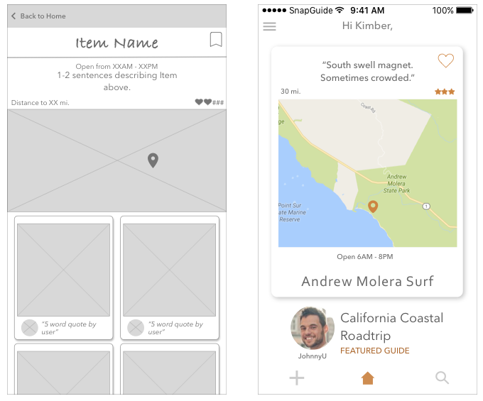
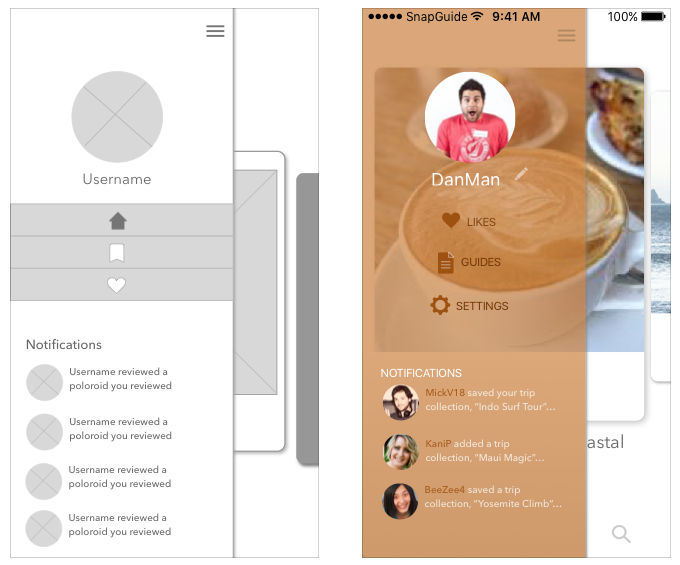
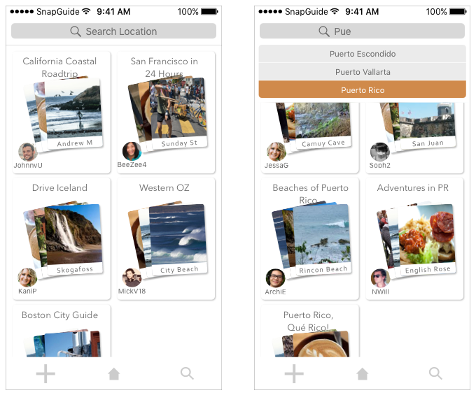
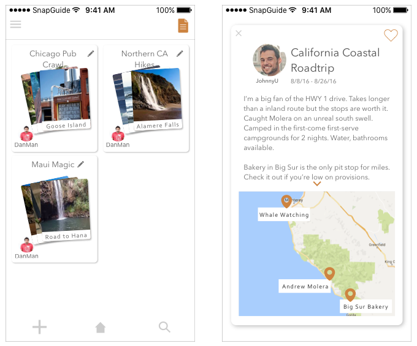
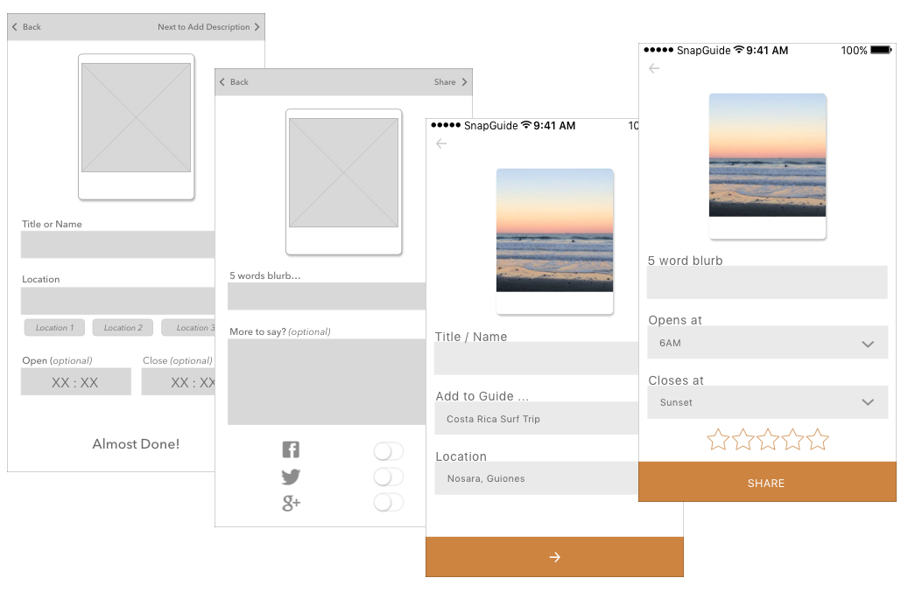

SnapGuide is a mobile collection of photo travel guides created by other travelers. It enables travelers to spontaneously find things to do and see while on the road. SnapGuide aims to make traveling personal and fulfilling.
my role
I created SnapGuide over 6-weeks. My task was to address a problem users have with online or mobile services that they use to support their travel.
I oversaw the full creation of this project from conducting user interviews and analyzing the results, to making wireframes, prototypes, and performing usability tests that informed my redesigns. By working through each stage of design for SnapGuide I experienced how every phase impacts others phases and the final product.
it's hard to make plans from a distance
Planning a travel itinerary remotely is difficult to do even with the help of the internet. While there are countless travel resources available to travelers today the most accurate information is available to a traveler when she arrives at her travel destination. Additionally although some planning is still necessary to ensure a fulfilling experience travel is most rewarding when there is room for serendipity.
Before sitting down to talk with travelers I had thought that one of the most frustrating parts of travel planning was the process of researching and booking flights, particularly for international travel. I quickly found out that this was not a primary concern for travelers.
talking to people who travel
I want to get a full experience but I don't really know where to start.
As soon as I get there it will be very apparent what I should have done and if I made the right decision or the wrong decision.
I was interested in finding out of the way things that were interesting to me. I could spend whole days bouncing between coffee shops and bookstores ... and that was a great day to me.
It only took a few conversations to learn that while coordinating logistics such as flights and accomodations came with certain challenges users still felt in control because they had tools to address these issues. Much stronger emotions came out when people spoke about their anxiety of missing out on fulfilling experiences or revealed their concerns about making the right planning choices for themselves personally. The challenge lay not only in finding things to do and places to see but also in how enriching those experiences were to the individual. To cap it off travelers are aware that they do not always know what they are looking for.
Points that Stood Out
- People struggle with authoritative guides such as the Lonely Planet. While such comprehensive guides provide a good starting point to outline trip activities, it also emphasizes all that a traveler is unable to accomplish in her limited timeframe.
- Quirky and personal travel suggestions or guides by other travelers can be more compelling.
- Local knowledge is invaluable. People travel to places their friends or relatives are living as a starting point for their trips.
- Online reviews and even personal recommendations are taken with a grain of salt. The best way to discover a place is yourself.
meet ian
Ian is a persona I created to express the characteristics, behaviors and needs of my target user. By referring back to Ian's goals I was able to focus on the features I needed to develop for an MVP to meet his needs.

Ian's primary goal is to find things to do in real-time so he can maximize his travels in a way that feels meaningful to him.
reaching an mvp
Employing a lean UX method. I approached this project with a focus on obtaining user feedback early and often. Through a combination of sketching and rapid prototyping I was able to quickly test and retest my designs to align with user needs and expectations.
Primary Features
I synthesized the information I now had into reoccuring themes expressed by multiple travelers. I used a combination of notetaking and affinity mapping to arrive at the user goals below. By referencing these core goals I pared down an array of plausible features into a primary list.
User Flow
This initial user flow shows a user accomplishing one of two paths: discovering an activity or item of interest by location or by applying filters, or adding a new post of their own to share with other users.
a bit of a bumpy start
I started by drawing out a host of ideas without limiting myself to particular elements or functionalities. Although multiple travelers had mentioned performing image searches to get travel inspiration I also wanted to explore any range of options. Some of these ideas included a messaging service to connect nearby travelers together as well as a map-view homepage which generated nearby landmarks and activties.
From here I built-out an idea for a photo-oriented review app and conducted a paper prototype test with 3 participants to gather a preliminary round of data.
What I discovered...
It was unclear to participants how the staggered system of first saving and then reviewing items worked. The separate interactions of saving an item of interest into a list and then returning to review a positive experience felt clunky. There was also sometimes too much happening on one screen for testers to know how to advance to another screen. However participants loved the whimsical feel of the photo-centric screens and contrasted them to text-heavy review sites such as TripIt or Yelp.
listening, designing, testing
I developed my paper sketches into higher-fidelity wireframes in Sketch App. I moved these into InVision and later Marvel App to add hotspot gestures and conduct usability tests.
v1 to v2
Many changes took place between the first and second prototypes I tested.
- knowledge: I started with a bookmark icon for saving items and a heart icon for reviewing a saved item.
- Why this didn't work: Users are familiar using hearts for saving items and stars for reviewing.
- Navigation: I moved from a static bottom menu to a hamburger sidebar
- I ended up employing both to improve access to certain primary features and also to introduce new features.
- Visual recognition: I tweaked the UI of the item cards to resemble polaroids.
- At first the UI didn't feel particularly cohesive. Once the polaroids were added in participants immediately remarked on how much they loved them.
- Real content: I started out using filler boxes for images and text.
- Why I needed more: Participants relied heavily on the content in the app to make their decisions. Lack of real content led to confusion or incomplete decisions.
before and after
These are a few examples of the changes I made over multiple rounds of wireframing and testing new prototypes with participants.
Home screen
The initial home screen I tested was stark. Because of the lack of elements on the home screen participants frequently returned to the sidebar hamburger menu in an effort to gain greater navigational control. I brought some of these elements out from the sidebar menu for easier access and also added sample content into the protoype.
Item detail
The original design started out as an app to review landmarks or things to do with contributions from other users. Several participants compared it to a visual Yelp. The results was an expectation for logistical information about the review such as a summary description, opening hours, and a map of the location. I wanted to shift the focus from logistics to personal experiences.
When I changed the function from user reviews to user Guides there was no longer a need to browse through different users' input about one item. Instead the describing details on the item screen could be simplified to capture the user's experience in the context of her trip.
Navigation
The sidebar menu on the left served as the global navigation for the app. Certain actions such as adding a new post or a review were buried under multiple levels from this screen. I incorporated a static global navigation menu to the bottom of the home screen for direct access to the search and adding new posts features. By bringing some of these elements out of hiding I was able to introduce a new element, Guides, that became the heart of the product.
Adding in Search
I intentionally omitted the option to search in earlier prototypes. I wanted to test whether participants would be more encouraged to operate in the moment rather than in the future. Not having the ability to search limits how much a user can plan ahead. Although recommendations are surfaced based on a user's current location, providing activity options for the present time, nearly every participant missed the search feature immediately. I put it back in.
Adding in Guides
As the product developed, it became clear that it was missing a core user need. More important than finding things to populate their travel itineraries with, travelers wanted their trips to be personal. One participant told me the story of how he had met travelers in Vietnam who warned him away from the beach town of Nha Trang. He went anyway, stayed two weeks, and it turned out to be one of his favorite stops.
Reviews are snapshots of experiences taken out of context and heavily influenced. They can help us locate a restaurant for dinner but once we are there the experience is ours to own. I created Guides as a way to return a snapshot experience into a more robust and connected story.
New posts
I changed the flow for adding a new post to align with existing design patterns. I moved the action for progressing to the bottom of the screen and added dropdown options to input fields. Finally I replaced the concept of reviews with a simpler star rating system.
what stuck with me
Users have expectations of gesture design indicators for swiping, flipping, and tapping. One limitation I faced while prototyping was the inability to layer multiple hotspots over the same area. However having participants talk me through their behaviors ended up showing me how users expected to move through the app.
Constant iteration between rounds of testing helped me change this product into something I never would have envisioned at earlier stages. When I started developing ideas into wireframes I lost sight of one of the primary needs I had initially established. Building out a travel reviewing app felt more concrete so I ran with that. However I was dissatisfied with the lack of users' personalities and the endless flood of information that reviews consist of. It was only when I returned to my original list of goals that I was able to extract what was useful in my current design and what needed to be changed.
Users describe wanting a lot of detailed information to base their decisions on. However during testing brief 5 word quotes used in place of longer descriptions stood out as a positive. This was surprising and encouraged me to make other design choices that might have felt opposing to users' wishes otherwise.